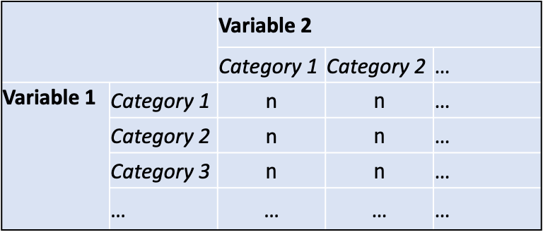

- 1
-
Specify that you are using the csew data file using the
with()function - 2
-
In the
ctable()function: first variable name (rows); second variable name (columns); and report column proportions (prop = 'c'); each part separated with a,.
Bivariate analysis with factor variables in R
In social research we are interested in understanding how social characteristics (e.g., gender, race, social class, age) impact people’s lives in different ways (e.g., linked to education, employment and health)
In bivariate analysis we focus only on two variables:
A social outcome variable (e.g., being a victim of crime)
A variable corresponding to a social characteristic (e.g., gender, race/ethnicity, social class)
Conduct a cross-tab analysis when the types of two variables we are analyzing are factors
A cross-tab reports the frequency distribution of one variable for each category of a second variable
Example: Area (urban/rural) and being a victim of crime
What proportion of people in urban and rural areas reported being a victim of crime in the previous 12 months?
Note
factor variables are sometimes called categorical or nominal variables.
The categories of one variable are listed in rows
The categories of the second variable are arranged in columns

You choose which variable to place in rows and which to place in columns
We are going to use a function called ctable() which is part of the summarytools package we used last week
Using data from the Crime Survey of England and Wales 2013
The variables we will be using are:
with() function
ctable() function: first variable name (rows); second variable name (columns); and report column proportions (prop = 'c'); each part separated with a ,.
Note
We are reporting column proportions because the social group variable (rural2) is in the columns.
What this code ‘says’ in words: With the data ‘csew’, produce a crosstab (using ctable()) placing categories of bcsvictim in rows, and categories of rural2 in columns, and report column percentages.
Cross-Tabulation, Column Proportions
bcsvictim * rural2
Data Frame: csew
----------------------- -------- --------------- --------------- ---------------
rural2 Rural Urban Total
bcsvictim
Not a victim of crime 1840 ( 88.1%) 5620 ( 83.2%) 7460 ( 84.4%)
Victim of crime 248 ( 11.9%) 1135 ( 16.8%) 1383 ( 15.6%)
Total 2088 (100.0%) 6755 (100.0%) 8843 (100.0%)
----------------------- -------- --------------- --------------- ---------------What proportion of people in urban and rural areas reported being a victim of crime in the previous 12 months?
There is a difference: Proportion of crime victims is higher in urban areas compared with rural areas.
But is the difference statistically significant?
In social research we aim to say something about a wider population we are interested in – and the social problem/issue in general
A strength of quantitative research is that, if well designed, we can draw conclusions about the extent to which the results we observe in a sample apply to a corresponding population
That is, we can generalise to a population
We never observe the population placing limits on what we can infer based on a sample
If there was no difference in the proportion of people in urban and rural areas who were a victim of crime, we would say that these variables were statistically independent
We would not expect observe exact equality of proportions in any sample
Do the observed frequencies differ significantly from what we would expect if crime victimhood and area were statistically independent in the population?
Research question: Is there a difference in the proportion of people who experience crime associated with race/ethnicity?
Null hypothesis: No difference in crime victimhood in the population associated with area (urban/rural) - % who experience crime equal across all groups
Conduct Chi-square test of independence to test whether null hypothesis is plausible
\[ X^2 = ∑\frac{(f_o - f_e)^2}{f_e} \]
fo = Observed frequencies
fe = Expected frequencies
Add chisq = TRUE to the code-chunk we used to produce the cross-tab above - as shown in the code-chunk here:
Cross-Tabulation, Column Proportions
bcsvictim * rural2
Data Frame: csew
----------------------- -------- --------------- --------------- ---------------
rural2 Rural Urban Total
bcsvictim
Not a victim of crime 1840 ( 88.1%) 5620 ( 83.2%) 7460 ( 84.4%)
Victim of crime 248 ( 11.9%) 1135 ( 16.8%) 1383 ( 15.6%)
Total 2088 (100.0%) 6755 (100.0%) 8843 (100.0%)
----------------------- -------- --------------- --------------- ---------------
----------------------------
Chi.squared df p.value
------------- ---- ---------
28.9505 1 0
----------------------------Note
The p-value is not exactly zero. It is a very small number less than 0.001 (actually: 0.000000074).
Understanding the p-value is critical to interpreting the results of the chi-square test
The ‘p’ in p-value stands for probability
Probabilities are values that range from 0 to 1
The closer we get to 0, the more unlikely something is: winning the lottery!
The closer we get to 1 (or 💯), the more likely something is: passing research methods!
The p-value is a probability – but a probability of what?
If the null hypothesis holds for population, what is the probability of obtaining the chi-square statistic we obtained (28.9505)?
The reported p-value is very small (< 0.001)
This tells us that this chi-square statistic would be extremely unlikely if the null hypothesis was plausible
Therefore we reject the null hypothesis, and conclude that the difference is statistically significant
Real-world applied research uses a standard threshold around the value of 0.05 to decide whether a result is statistically significant
p-value < 0.05
If the p-value is less than (<) 0.05 the result is statistically significant
Reject the null hypothesis
p-value > 0.05
If the p-value is greater than (>) 0.05 the result is not statistically significant
Fail to reject the null hypothesis